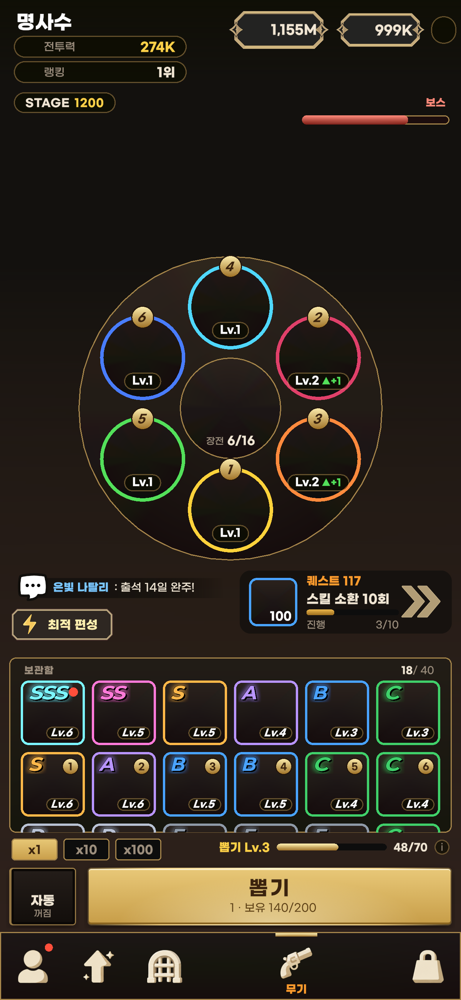
01 홈 부분 적용 검수본기준 원본 보기 · 고해상도는 ZIP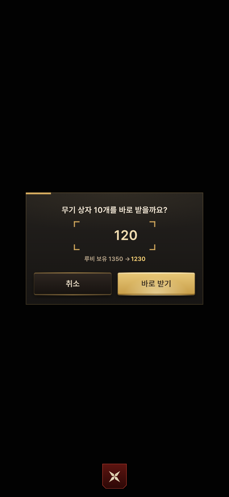
02 확인기준 원본 보기 · 고해상도는 ZIP03 재화 부족기준 원본 보기 · 고해상도는 ZIP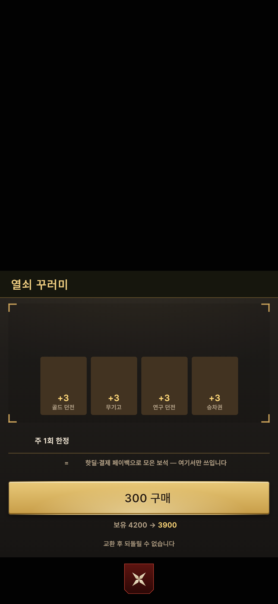
04 상품 상세기준 원본 보기 · 고해상도는 ZIP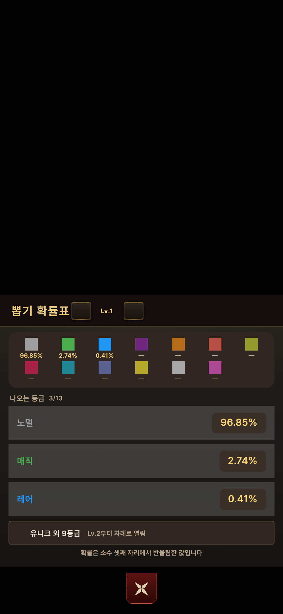
05 뽑기 확률표기준 원본 보기 · 고해상도는 ZIP06 기능 해금기준 원본 보기 · 고해상도는 ZIP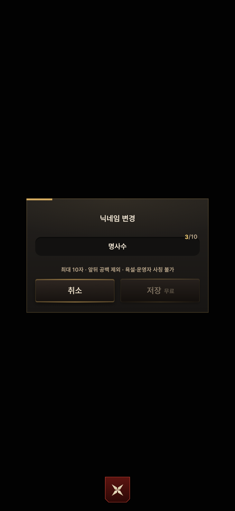
07 닉네임 변경기준 원본 보기 · 고해상도는 ZIP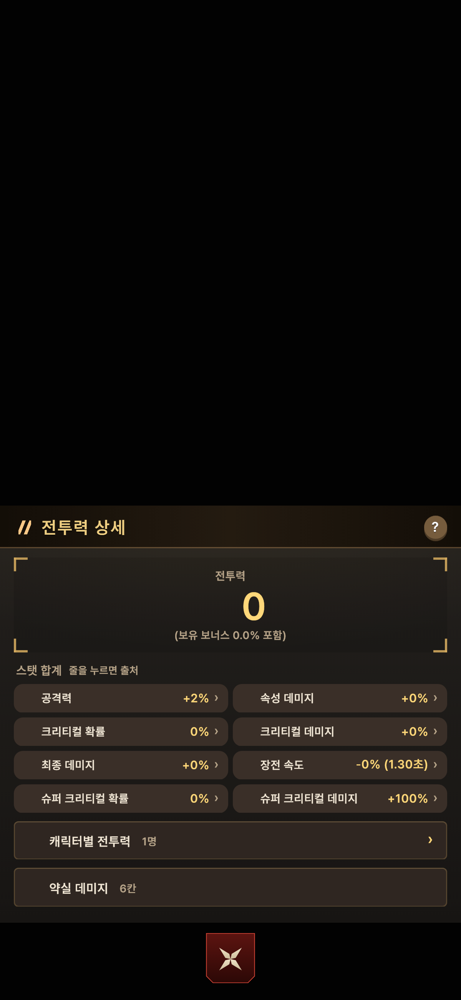
08 전투력 상세기준 원본 보기 · 고해상도는 ZIP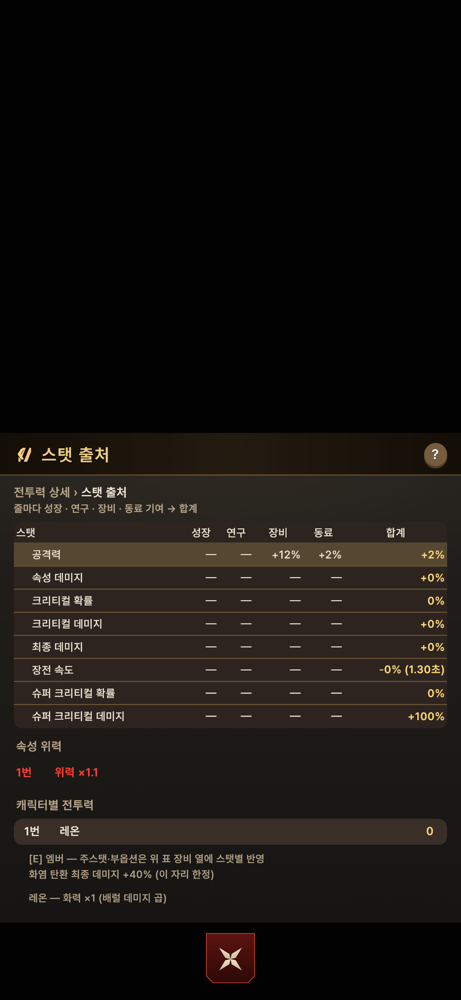
09 스탯 출처기준 원본 보기 · 고해상도는 ZIP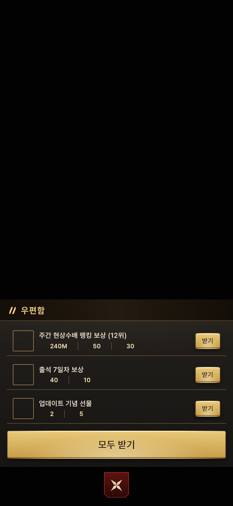
10 우편함기준 원본 보기 · 고해상도는 ZIP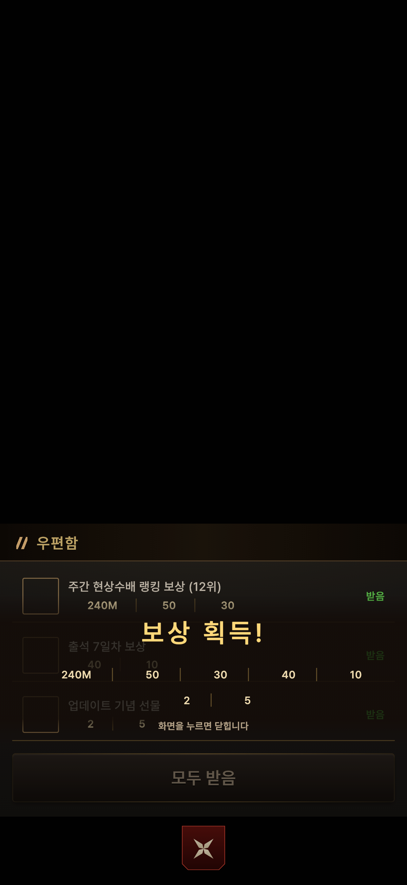
11 우편 보상 획득기준 원본 보기 · 고해상도는 ZIP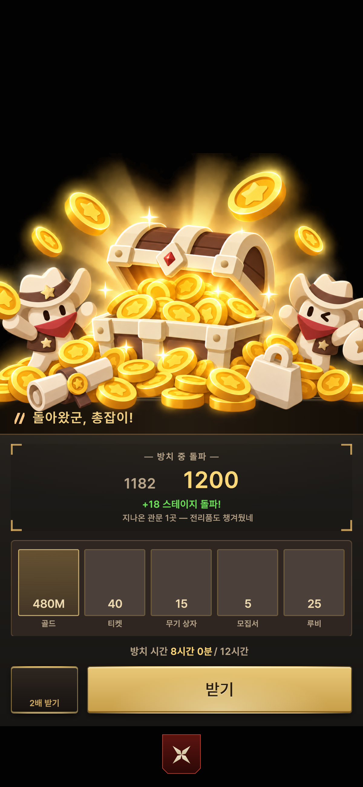
12 방치 보상기준 원본 보기 · 고해상도는 ZIP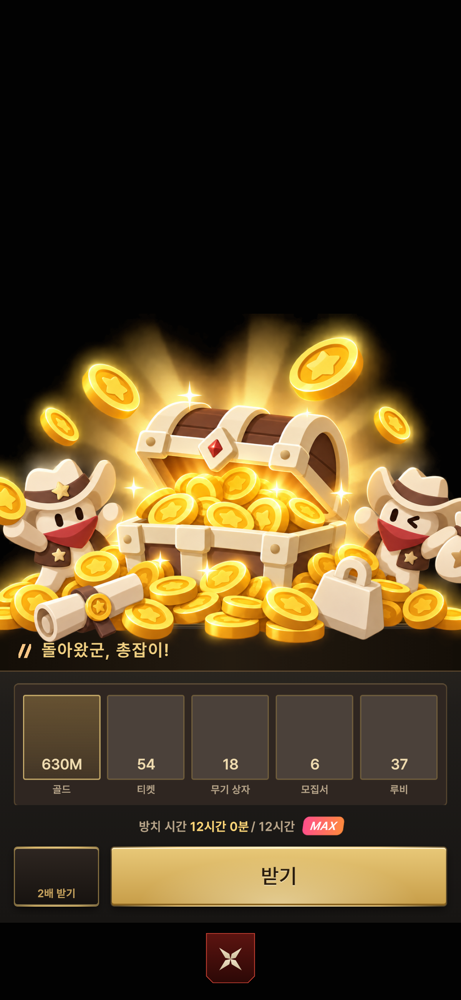
13 방치 보상 최대기준 원본 보기 · 고해상도는 ZIP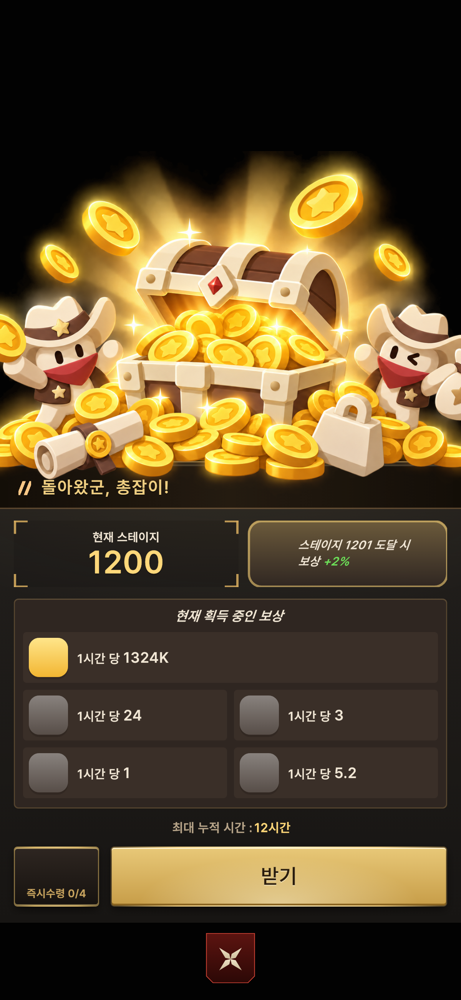
14 방치 보상 빈 상태기준 원본 보기 · 고해상도는 ZIP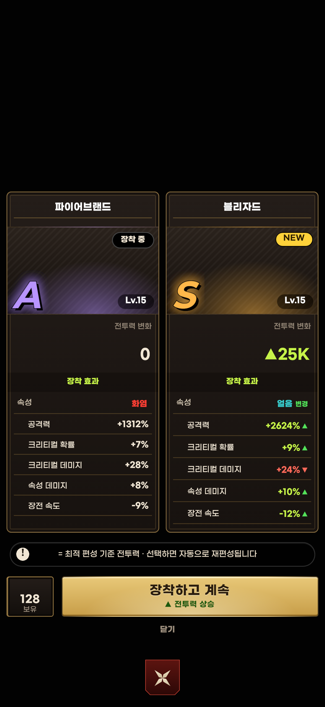
15 리볼버 상승기준 원본 보기 · 고해상도는 ZIP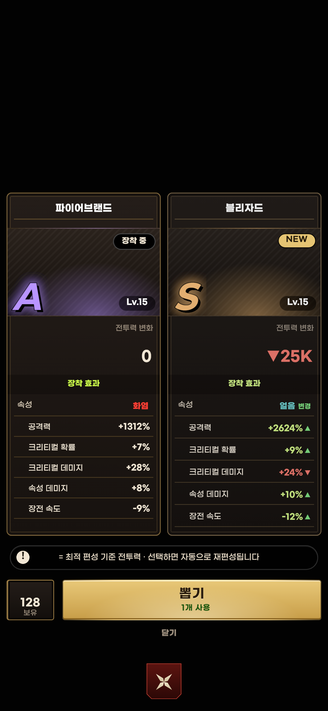
16 리볼버 하락기준 원본 보기 · 고해상도는 ZIP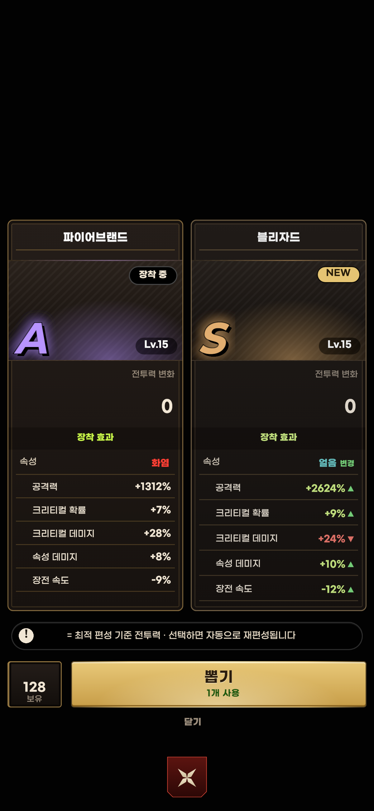
17 리볼버 동률기준 원본 보기 · 고해상도는 ZIP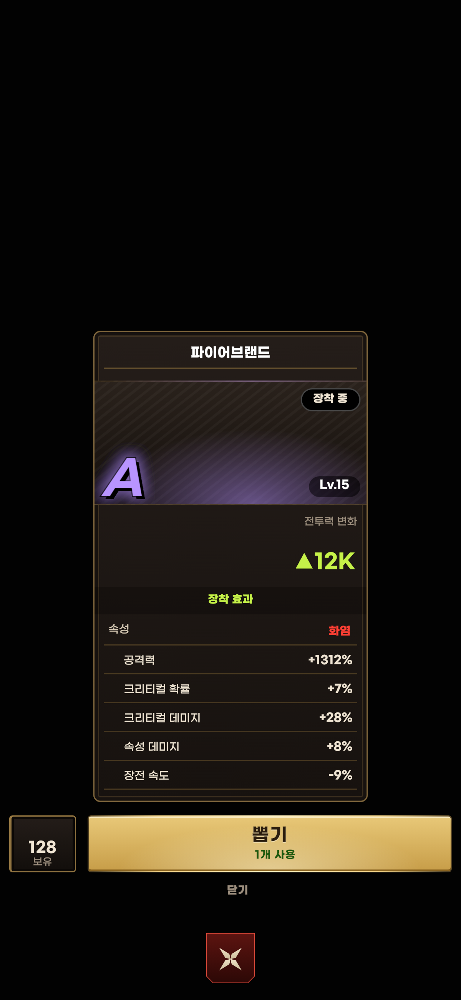
18 리볼버 첫 뽑기기준 원본 보기 · 고해상도는 ZIP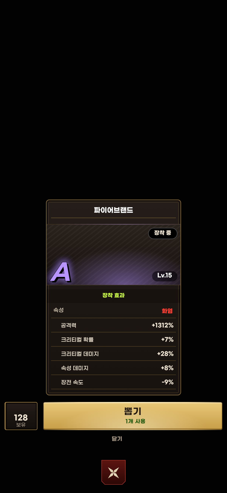
19 리볼버 장착 완료기준 원본 보기 · 고해상도는 ZIP20 리볼버 없음기준 원본 보기 · 고해상도는 ZIP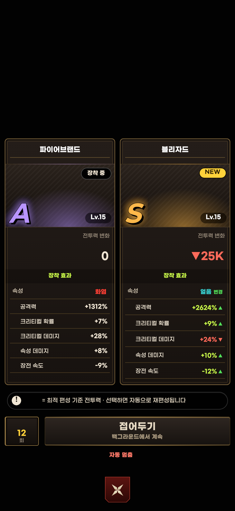
21 자동 뽑기기준 원본 보기 · 고해상도는 ZIP22 자동 중 상승 발견기준 원본 보기 · 고해상도는 ZIP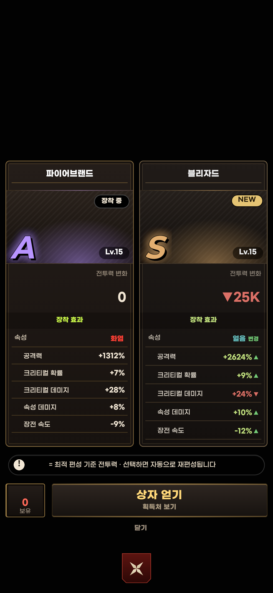
23 상자 부족기준 원본 보기 · 고해상도는 ZIP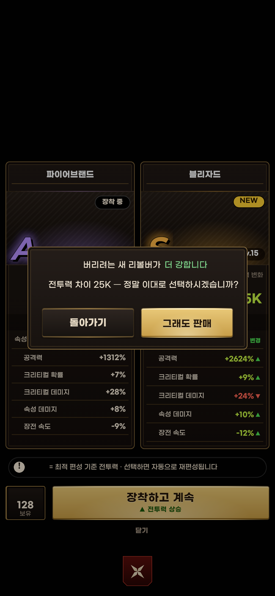
24 판매 경고기준 원본 보기 · 고해상도는 ZIP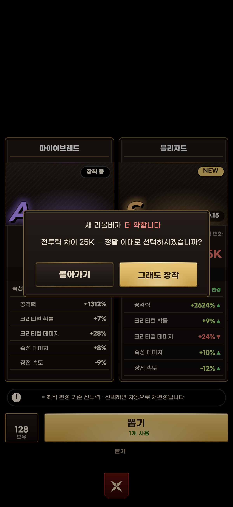
25 장착 경고기준 원본 보기 · 고해상도는 ZIP